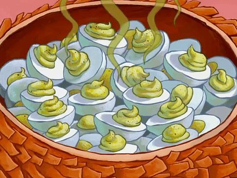

Deviled Eggs

The Wonderful Smelly Eggs
Not a fan of these truly and needed something simple to try on my own truly.
To me these are just too much, from the look to the smell. My mother on the other
hand, can't get enough of these. These little guys are filled with a creamy mayonnaise,
yummy dijon mustard and a nice splash of rice wine vinegar. ALso some good ole dill
and garlic powder would add to the delightfulness.
Ingredients
- 6 hard-cooked eggs, halved
- ¼ cup mayonnaise
- 1 teaspoon rice wine vinegar
- ½ teaspoon chopped fresh dill Optional
- 1 teaspoon Dijon mustard
- ¼ teaspoon garlic powder
- ⅛ teaspoon salt
- 12 sprigs fresh dill Optional>
Steps
- Scoop egg yolks into a bowl and set egg whites aside. Mash yolks, mayonnaise, vinegar, 1/2 teaspoon chopped dill, Dijon mustard, garlic powder, and salt. Spoon yolk mixture into egg whites. Garnish with dill sprigs. Refrigerate until ready to serve.